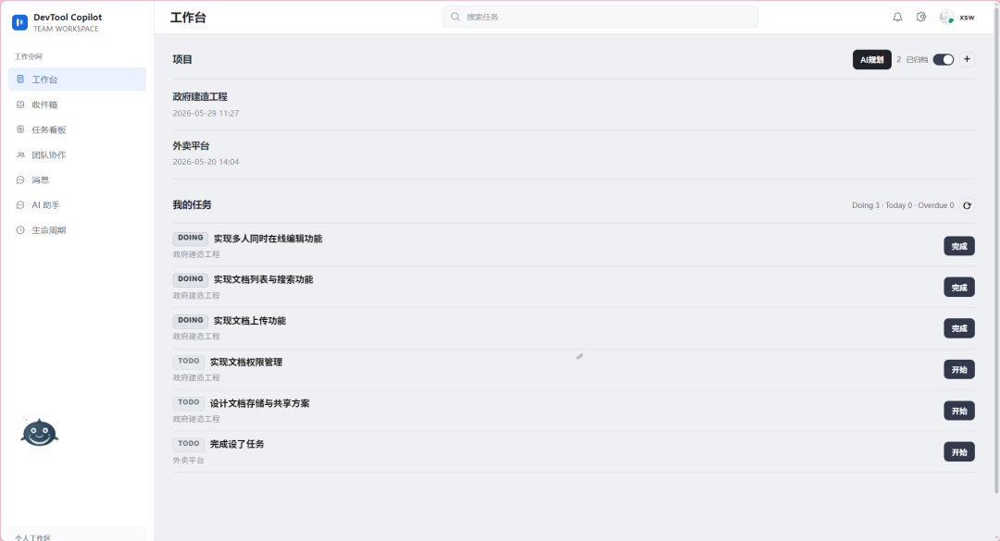
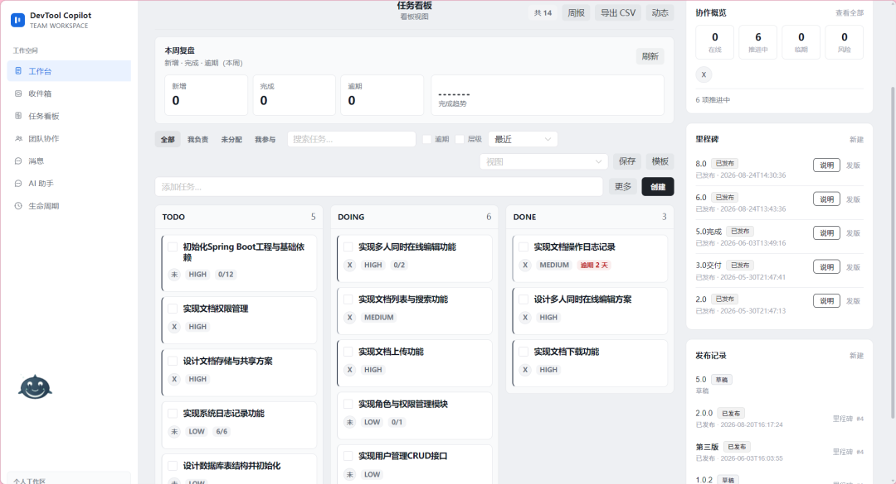
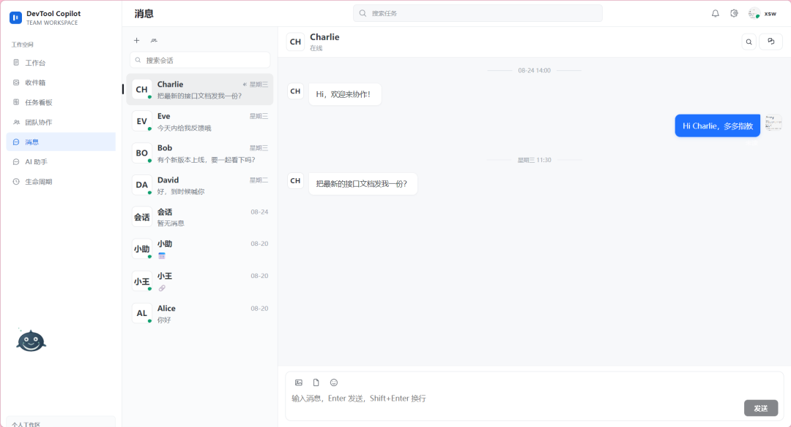
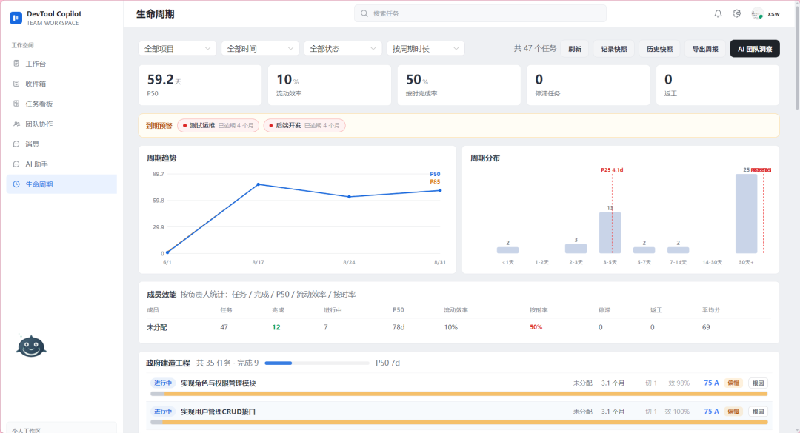
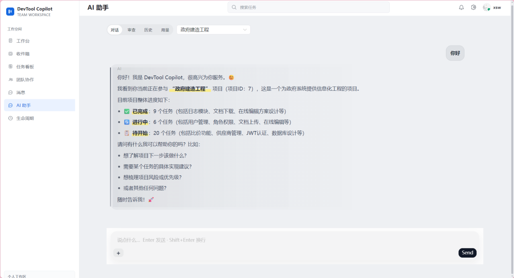

{kind=link}
从项目创建到实际交付
项目、成员、看板、任务、子任务、清单、里程碑和发布记录形成执行链路，任务状态和项目进度可聚合查看。
独立完成的全栈项目，围绕项目管理、任务协作、即时消息与 AI 辅助规划构建。重点不是展示 AI 聊天，而是把需求、任务、消息和交付过程放进一套可追溯的业务系统。

项目的基础能力独立成立：用户与权限、项目和成员、任务与清单、聊天和通知、审计和效能分析。AI 在此基础上参与需求拆解，而不是取代这些业务模块。
项目、成员、看板、任务、子任务、清单、里程碑和发布记录形成执行链路，任务状态和项目进度可聚合查看。
即时消息、在线状态、项目动态与系统通知进入统一协作空间，减少任务推进过程中的信息断层。
审计记录、任务生命周期和项目效能视图沉淀过程数据，使需求到交付的每一步都可以回看。
关键实现围绕权限边界、多步写入一致性、数据持久化和接口职责展开。这些设计决定系统是否能稳定承接真实协作场景。
JWT 实现无状态认证，拦截器统一解析令牌并写入当前用户上下文。
ThreadLocal 在请求结束时清理，避免线程池复用导致用户串号。多步写入由服务层 @Transactional 统一包裹，确保业务动作具备原子性。
用户、项目、任务、聊天、通知、AI 与审计按领域拆分，不把复杂业务塞进单一模块。
TableInitializer 在启动时检查建表、补齐字段并写入种子数据。统一响应包装和全局异常处理收敛接口返回，Controller 和 Service 各自保持单一职责。
@RestControllerAdvice 将业务异常统一转换为标准错误格式。AI 对话和计划生成由服务端持续单向输出；通知按用户维护 SseEmitter 集合，向目标用户精确推送事件。
按项目、会话和团队维度订阅长连接，实时同步消息、已读回执、成员在线状态和协同事件。
会话成员保存 last_read_message_id。一次已读只更新成员记录，未读数通过消息 ID 位点计算，避免历史消息写放大。
@Override public ChatMessageItem markRead(Long userId, Long conversationId) { ChatConversationMember mine = requireMember(conversationId, userId); Long lastId = conversation.getLastMessageId(); if (lastId != null) { mine.setLastReadMessageId(lastId); memberMapper.updateById(mine); // 向会话成员广播已读事件 realtimeCollabService.broadcastChatEvent( conversationId, memberIds, userId, "CHAT_MESSAGE_READ", event); } return lastMessage; }

任务状态、优先级、子任务、负责人和里程碑承接需求拆解后的实际交付过程。

会话、附件与已读回执通过 WebSocket 同步，消息不再脱离项目协作场景。

基于任务生命周期计算周期、完成率与趋势，为过程复盘提供数据支持。
AI 的价值在于减少需求拆解的重复劳动。系统将上下文注入、结构化计划、人工确认和事务化应用连成闭环，约束模型输出的风险。
在项目或任务上下文中输入自然语言需求。
通过 SSE 返回任务、子任务、清单与交付物。
确认后才触发事务化批量写入与审计记录。
核心设计不是调用模型，而是 Plan → Confirm → Apply：生成计划和写入数据分离，用户始终保有最终决定权。

Vue 3、TypeScript、Pinia、Naive UI
Java 17、Spring Boot 3、MyBatis-Plus
MySQL 8、事务管理、领域表初始化
SSE、WebSocket、连接订阅与事件分发
Nginx 反向代理、HTTPS、WebSocket 与 SSE 转发
DevTool Copilot 是我面向 Java 后端与全栈方向完成的个人项目，从领域建模、数据一致性、实时通信到前端交互均独立实现。
{kind=link}
{kind=link}
{kind=link}
{kind=link}